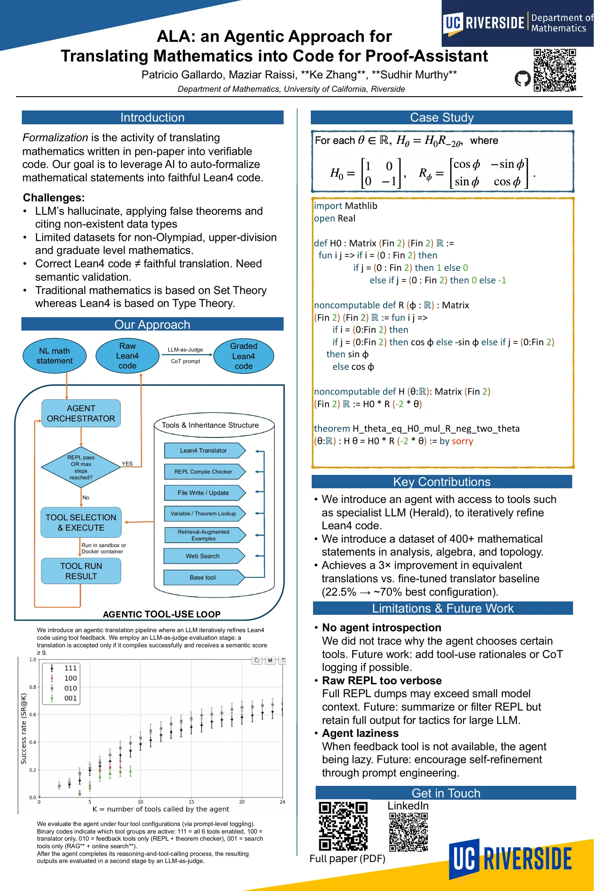

This project develops an agent system that translates natural-language mathematics into Lean4 code,
with proofs left as sorry, and verifies correctness through theorem checking,
REPL feedback, and other tools via iterative refinement. The system will be extended to support
full theorem proving.
Here is the workshop paper (PDF) and the paper on arXiv.

Click the poster to open the full-resolution PDF.